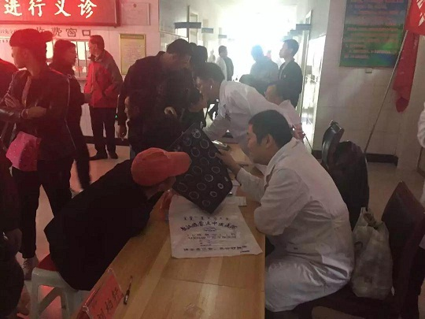

2019年10月13日，农工党赤峰市委主委、赤峰市政府副市长李艳茹带队，组织党内医疗专家和部分农工党员赴敖汉旗贝子府镇开展“全体党员下基层”活动，进行健康扶贫。

活动中，来自赤峰市医院、赤峰学院附属医院、中蒙医院、肿瘤医院、妇幼保健医院的心外科、心内科、超声科、中医科、骨科、乳腺科、妇科等10个科室的12名农工党医疗专家，为当地因病致贫、建档立卡贫困群众开展了集中义诊，共为200余名群众进行了诊疗，为160余名群众进行了免费彩超检查，并免费发放了药品。
针对行动不便的贫困患者，专家们入户义诊，并与患病群众结成长期帮扶对子，提供及时医疗咨询服务和就医帮助。
在义诊的同时，农工党赤峰市委的部分党员还深入贫困户家中，为贫困户赠送农工党赤峰市委制作的健康讲座光盘，并开展疾病谱调查，为相关部门疾病防治、救助帮扶提供依据。
当前，正处于精准脱贫攻坚战关键时期，按照农工党深入开展“不忘合作初心，继续携手前进”主题教育活动“履职尽责要突出实践性”要求，为了进一步了解贫困地区群众因病致贫返贫情况，助力健康扶贫，农工党赤峰市委计划从2019年10月至12月底，开展以“发挥本党界别优势，助力精准脱贫攻坚”为主题的“全体党员下基层”活动，利用节假日，由农工党赤峰市委班子成员轮流带队，选择赤峰市因病致贫返贫情况最为严重的10个乡镇，开展健康扶贫活动。
此次活动是“全体党员下基层”的第一站，活动的开展不仅使患病群众在家门口就享受到了优质的医疗服务，切实助力精准脱贫攻坚，还增进了农工党员与人民群众的密切联系，使党员们在为人民群众排忧解难中增强工作本领，切实把“不忘合作初心，继续携手前进”主题教育成果体现在工作中，落实到行动上。